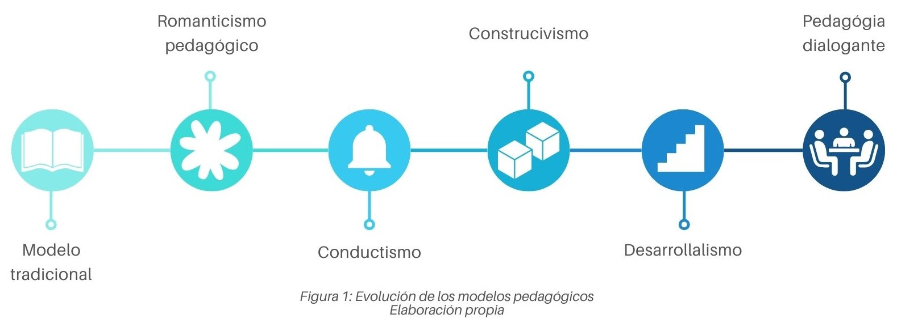

Modelos pedagógicos
La evolución de los modelos pedagógicos ha pasado del modelo tradicional, centrado en la transmisión de conocimientos, al constructivismo, que promueve la participación activa del estudiante en su aprendizaje. Hoy en día, la pedagogía dialogante busca fomentar el desarrollo integral a través del diálogo, priorizando el pensamiento crítico y la autonomía del estudiante.
